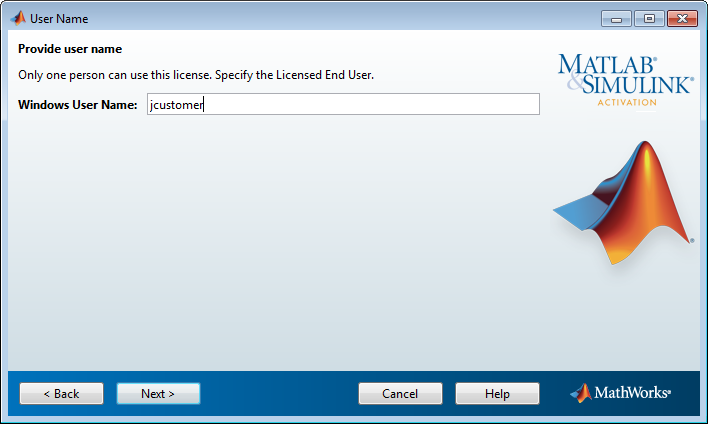

インディビジュアル ライセンスを選択した場合は、ソフトウェアを使用するユーザーの "オペレーティング システムのユーザー名" を指定しなければなりません。インディビジュアル ライセンスの場合、ソフトウェアの使用は特定のコンピューター上の特定のユーザーに制限されます。MathWorks® では、オペレーティング システムのユーザー名を使用してこのユーザーを識別しています。オペレーティング システムのユーザー名とは、ユーザーがコンピューターにアクセスするための ID で、コンピューターのログイン名とも呼ばれます。MathWorks ソフトウェアを使用するには、指定したユーザー名でコンピューターにログインしなければなりません。
既定では、アクティベーション アプリケーションによって、アプリケーションを実行中のユーザー名が自動的に記入されます。この既定の設定を受け入れるには、[Windows のユーザー名] の値をそのままにして [次へ] をクリックします。管理者アカウントを使用してソフトウェアをインストールした後、別のアカウントを使用してソフトウェアにアクセスする場合は、そのユーザー名をここで指定できます。
